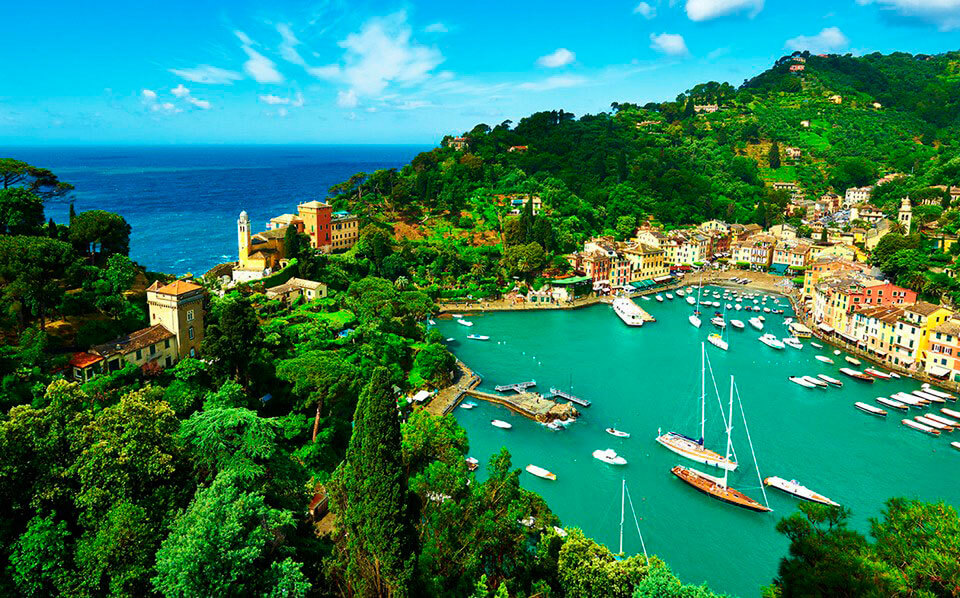
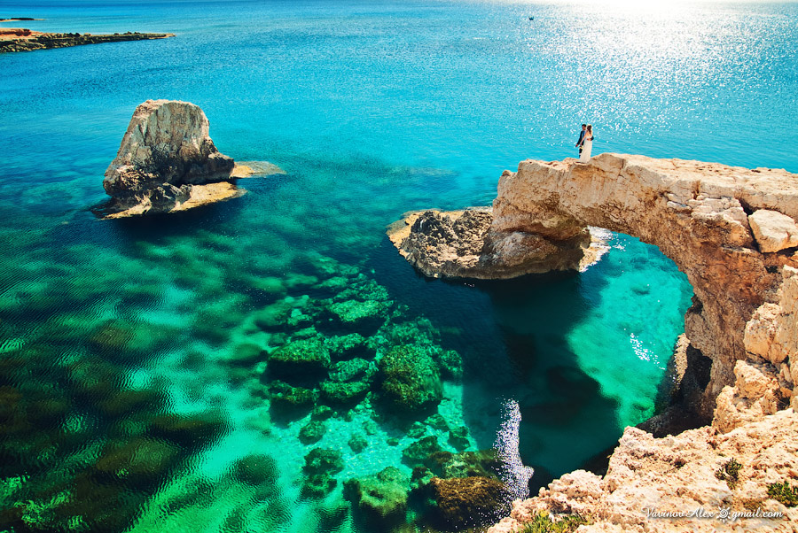
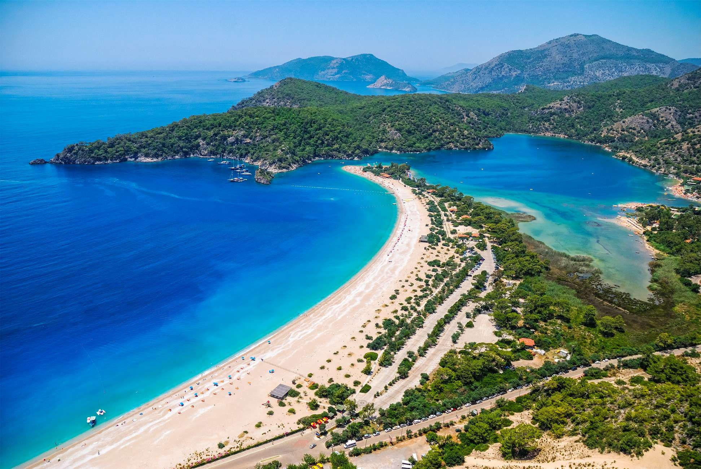
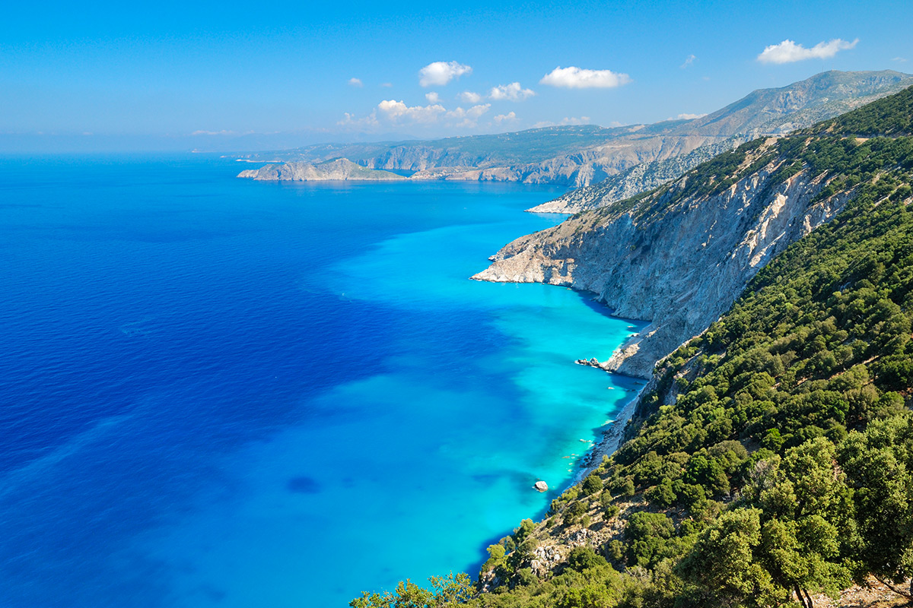

- Италия
- Кипр
- Турция
- Греция
- Испания
|
Приятной новостью для всех путешественников станет то, что практически все пляжи на этих курортах муниципальные.
Это означает, что за вход на них платить не нужно, оплачиваются только лежаки и зонтики.
Но вы вполне можете поваляться на пляже и на полотенце — никто на вас осуждающе не посмотрит.
Зачастую пляж в Италии галечный, хотя встречаются и песчаные. А вот вход в воду везде мягкий, что удобно для купания маленьких детей.
Самое оптимальное время для семейного отдыха на море в Италии — это май-июнь и сентябрь. В разгар лета здесь все-таки очень жарко.
|
 |
|
Пляжные курорты Кипра хороши все как один.
Отдых на пляжах Кипра предполагает, что море будет кристально чистым, небесно-голубым или синим, а солнце — жарким.
Вы найдете тут все, что пожелаете.
Яхтинг, прогулки с купанием, возможность всласть понырять в живописные коралловые рифы, и даже половить осьминогов, если захочется.
Если верить отзывам туристов, лучший пляжный отдых на Кипре — на самых южных курортах, где теплая вода и небольшие волны.
Тут можно спокойно отдыхать с детьми или небольшими компаниями, особенно если вы ориентируетесь на неспешный ритм и возможность всласть позагорать на вулканическом песке.
|
 |
|
Турции удалось стать эпицентром массового туризма во многом благодаря комфортному пляжному отдыху.
Её средиземноморские курорты открывают свой купальный сезон уже в мае, который длится вплоть до середины октября.
Города Эгейского побережья приглашают туристов на свои пляжи только в июне и заканчивают принимать гостей в сентябре.
Отдых здесь достаточно дешев и, при прочих равных условиях можно отдыхать на турецких курортах дольше чем на европейских.
Да и сервис в отелях Турции на высоте. Если вы решаете, куда поехать отдыхать в Турции, то, очевидно, вам предстоит нелегкий выбор.
Ведь курортов в стране великое множество, и каждый из них обладает своими особенностями.
|
 |
|
Вот уж чего в Греции просто бесконечно много, так это морских курортов.
Страна, с трех сторон окруженная теплыми морями и солидной своей частью лежащая на островах, просто создана для морского отдыха.
Практически все острова Греции образуют длинную береговую линию. Она является самой протяженной среди всех средиземноморских пляжей.
А еще в стране свыше 400 пляжей отмечено «Голубыми флагами» Европы за экологическое состояние.
Пляжи в Греции есть разные, но в основном песчанные.
|
 |
|
Испании повезло с выходом к морю. Чудесные пляжи Средиземного моря на юге страны, Гибралтар, северо-запад, выходящий прямиком к Бискайскому заливу Атлантического океана.
Тяжело с такими возможностями не быть страной пляжного туризма. И его тут найти совсем не сложно.
Лучший отдых на море в Испании предлагают многие фешенебельные курорты.
Для отдыха с детьми лучше выбирать курорты, расположенные вдоль берега Средиземного моря, тут мягче климат и спокойнее волны.
Вдоль береговой линии Испании, на Балеарских и Канарских островах около 480 пляжей. Пляжи в Испании бесплатные, оплачивается прокат лежаков и зонтиков. |
 |